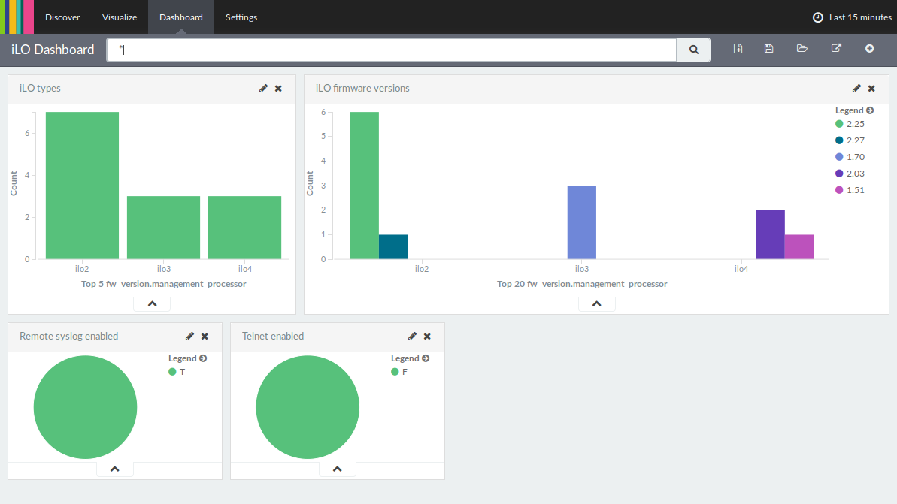

iLO information search¶
When managing large amounts of iLOs, it’s often useful to be able to quickly search through iLO configuration data without having to query them all. The approach chosen in this example is to store all available information in elasticsearch.
Storing information¶
While the application can query the iLO itself, it does need to be told the names (or IP addresses, but names are recommended) of your iLO interfaces. To do this, you will need to create a servers.py file that will tell the application what it wants. An example servers.py is shipped with the application that simply returns a static list of hostnames, but you could do anything here. The author uses a variant that queries an asset database to get the iLO names for example.
Once you have created servers.py to match your environment, you can run
hpilo_es_import. It will connect to elasticsearch on localhost and
create an index named hpilo. If elasticsearch does not live on localhost, you
can tell the application this in ~/.ilo.conf:
[elasticsearch]
host = elasticsearch.example.com
The importer will then contact all your iLOs and call the get_fw_version, get_host_data, get_global_settings, get_network_settings, get_all_user_info, get_oa_info and xmldata methods to get a bunch of information from the iLO. All this is then stored in elasticsearch.
Once you have this working, all that remains is to set up a cronjob to regularly run the importer to refresh the data.
Retrieving information¶
Of course data is useless if you cannot retrieve it. Since there is nothing special about the iLO data, you can fetch it from elasticsearch like you fetch any data from there. The example includes an application that dumps all data, but the most useful code here you will need to write yourself, or you can use a visualization tool like kibana to look at the data.
Kibana dashboard¶
Kibana is a really powerful dashboard solution for elasticsearch. You can use it to get a quick overview of your iLO versions, settings and health data. You can find an example dashboard in the directory of this example application that you can import in your Kibana 4 instance.
